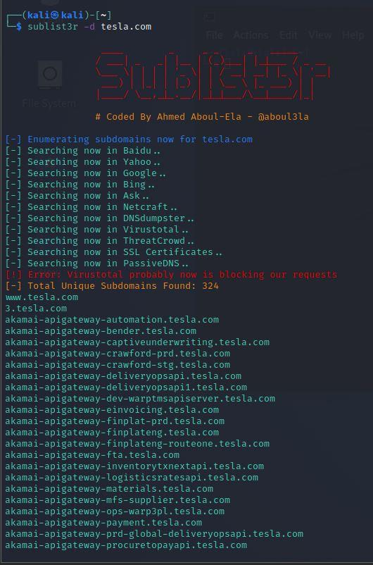

Now we will move to web information gathering or might encounter a webiste for internal or external test.
Now we will see how to gather the information pasively that is out there.
So the question is how to discover subdomains ?
We have seen in the bug bunty program something like this *.tesla.comwhere the * is called wildcard.
Why r sub domain important ?
We might run something like dev.tesla.com or testsite.tesla.com
So the first tool to find sub domain is called sublist3r.
we can install it using this command sudoapt install sublist3r
So to find sublist of any domain this is the syntax : sublist3r -d tesla.com
We could even use -t (i.e. threads and run the sublist3r more fast) sublist3r -d tesla.com -t 100

Another way through which we can find out the subdomain or certificates is https://crt.sh/
And there r some interesting results like vpn2.tesla.com, sso-dev.tesla.com etc.